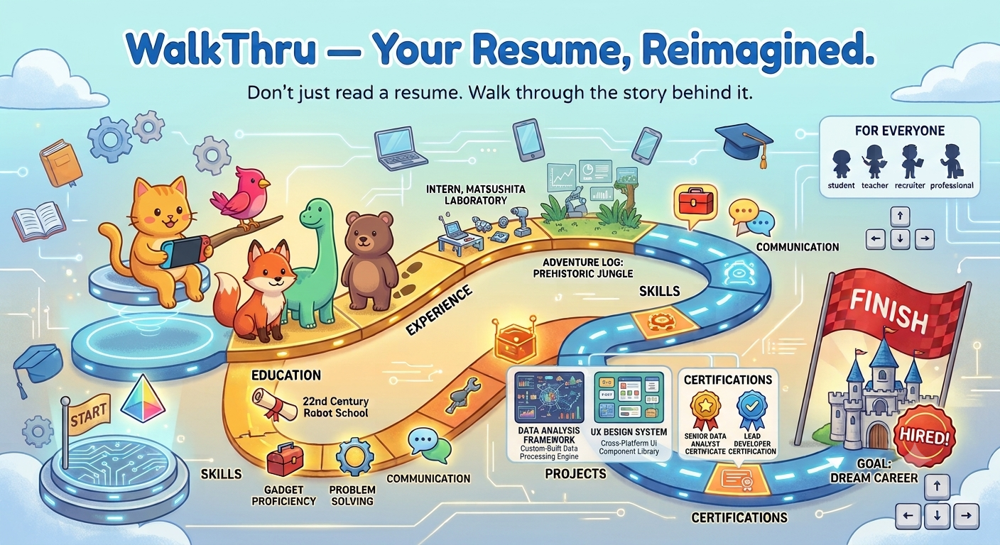

Upload
Choose a PDF or DOCX resume from your device.
Turn traditional resumes into an interactive 2D adventure. Discover skills, experience, and achievements one step at a time.

PDF or DOCX · Maximum 10 MB · Processed locally
Choose a PDF or DOCX resume from your device.
Pick a friendly character to guide your journey.
Travel through resume milestones in a playful 2D world.
WalkThru is designed for recruiters, students, and professionals who want to experience resumes beyond ordinary documents.